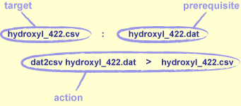
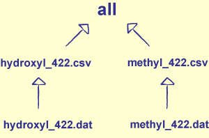

1) Introduction
- Most languages require you to compile programs before running them
- Typing
gcc -c -Wall -ansi -I/pkg/chempak/include dat2csv.c once is bad enough
- Typing it dozens of times as you edit and debug is tedious and error-prone
- Most large programs contain dependencies
- Module A uses modules B and C, B uses D and E, C uses E and F, etc.
- If E changes, ought to recompile B and C, then A
- Anything worth repeating is worth automating
- A standard way and place to save project-related commands...
- ...that keeps track of what depends on what
2) You Can Skip This Lecture If...
- You know what a Makefile is
- You know how to write a rule
- You know how dependencies affect the order of command execution
- You know how to define macros
- You know how to use automatic variables
- You know how to write a generic rule
3) Automate, Automate, Automate
- Tools that manage repetitive tasks and their dependencies are usually called build tools
- Originally developed to rebuild software packages
- Can equally well be used to update web site content, run backups, etc.
- Such a tool must have:
- A way to describe what things to do
- A way to specify the dependencies between them
4) Make
- Most widely used build tool is [Make]
- Invented at Bell Labs in 1975 by Stuart Feldman [Feldman 1979]
- He went on to become a vice-president at IBM, which shows you how far a good tool can take you
- The good news: Make is freely available for every major platform, and very well documented
- The bad news is Make's syntax
- Over 30 years, it has grown into a little programming language
- We will ignore advanced features for now
- Look at a better way to solve these problems in the Summary
5) Our Example
- Running example: Automated laboratory equipment runs experiments in batches to create files
- Each experiment produces 20-30 files
- Want to:
- Generate tables showing the results for particular trials using a program called
dat2csv
- Update a file showing the correlation between concentrations and yields based on those tables
6) Example Data File
Time: 1.2271
Concentration: 0.0050
Yield: 11.41
Time: 2.5094
Concentration: 0.0055
Yield: 11.20
Time: 3.7440
Concentration: 0.0060
Yield: 10.90
7) Hello, Make
- Put the following into a Makefile called
hello.mk:
hydroxyl_422.csv : hydroxyl_422.dat
dat2csv hydroxyl_422.dat > hydroxyl_422.csv
- Must indent with a tab character: not eight spaces, or a mix of spaces and tabs
- Yes, it's a wart, but we're stuck with it
- Run
make -f hello.mk
- Make sees that the CSV file depends on the data file
- Since the CSV file doesn't exist, Make runs
dat2csv hydroxyl_422.dat > hydroxyl_422.csv
- Run
make -f hello.mk again
hydroxyl_422.csv is newer than hydroxyl_422.dat, Make does not run the command again
8) Terminology

Figure 11.1: Structure of a Make Rule
hydroxyl_422.csv is the target of the rulehydroxyl_422.dat is its prerequisite- The compilation command is the rule's action
- Make runs them on your behalf, just as the shell runs the command you type
9) Multiple Targets
- Makefiles usually contain multiple rules
hydroxyl_422.csv : hydroxyl_422.dat
dat2csv hydroxyl_422.dat > hydroxyl_422.csv
methyl_422.csv : methyl_422.dat
dat2csv methyl_422.dat > methyl_422.csv
- When you run
make -f double.mk, only hydroxyl_422.csv is compiled
- The first rule in the Makefile specifies the default target
- Unless you tell it otherwise, that's all Make will update
- Have to run
make -f double.mk methyl_422.csv to build methyl_422.csv
10) Phony Targets
- Running Make separately for each target would hardly count as "automation"
- Solution: define a phony target that:
- Depends on all the things you want to recompile, but doesn't correspond to any files
- It can never be up to date, so making it will always execute its actions
all : hydroxyl_422.csv methyl_422.csv
hydroxyl_422.csv : hydroxyl_422.dat
dat2csv hydroxyl_422.dat > hydroxyl_422.csv
methyl_422.csv : methyl_422.dat
dat2csv methyl_422.dat > methyl_422.csv
make -f phony.mk all now creates both .csv files
11) Dependencies
- Note how one target can depend on others
all depends on hydroxyl_422.csv and methyl_422.csv- Each of these depends on (i.e., must be newer than) the corresponding
.dat file
- Can visualize dependencies as a directed graph
- Each file is represented by a node
- Dependencies are then the graph's arcs

Figure 11.2: Visualizing Dependencies
12) Updating Dependencies
- Make's built-in processing cycle:
- Follow links top-down to find direct and indirect dependencies
- Execute actions bottom-up to update
- Make can execute actions in any order it wants to, as long as it doesn't violate dependency ordering
- Could update either
hydroxyl_422.csv or methyl_422.csv first
- But has to update both before "updating"
all
13) Conventions
- If you run
make with no arguments, it automatically looks for a file called Makefile
- So most projects use that name for their Makefile
- And remember, without an explicit target name,
make only updates the first one it finds
- Typical phony targets in a typical Makefile include:
"all": recompile everything"clean": delete all temporary files, and everything produced by compilation"install": copy files to system directories
- Many open source packages can be installed by typing:
make configuremakemake testmake install
15) Automatic Variables Example
- Rewrite the Makefile using automatic variables
all : hydroxyl_422.csv methyl_422.csv
hydroxyl_422.csv : hydroxyl_422.dat
@dat2csv $< > $@
methyl_422.csv : methyl_422.dat
@dat2csv $< > $@
clean :
@rm -f *.csv
- By default, Make echoes actions before executing them
- Putting
"@" at the start of the action line prevents this
- And add a phony target
clean to tidy up generated files
- Question: why
rm -f instead of just rm?
16) Pattern Rules
- Most files of similar type in a project are processed the same way
- E.g., typically compile all C# or Java files with the same options
- Write a pattern rule to describe the general case
all : hydroxyl_422.csv methyl_422.csv
%.csv : %.dat
@dat2csv $< > $@
clean :
@rm -f *.csv
- The wildcard
"%" represents the stem of the file's name in the target and prerequisites
- Must use automatic variables in the actions
- This is why they were invented
17) Adding More Dependencies
- Now create a summary for each set of experiments
- Use
summarize to combine data from hydroxyl_422.csv and hydroxyl_480.csv
- Output is
hydroxyl_all.csv
- Perform same calculation for methyl files
- Updated Makefile is a simple extension of what we've seen before:
all : hydroxyl_all.csv methyl_all.csv
%_all.csv : %_422.csv %_480.csv
summarize $^ > $@
%.csv : %.dat dat2csv
dat2csv $< > $@
clean :
@rm -f *.csv
dat2csv hydroxyl_422.dat > hydroxyl_422.csv
dat2csv hydroxyl_480.dat > hydroxyl_480.csv
summarize hydroxyl_422.csv hydroxyl_480.csv > hydroxyl_all.csv
dat2csv methyl_422.dat > methyl_422.csv
dat2csv methyl_480.dat > methyl_480.csv
summarize methyl_422.csv methyl_480.csv > methyl_all.csv
rm hydroxyl_480.csv methyl_422.csv hydroxyl_422.csv methyl_480.csv
- The rule for
%_all.csv takes precedence over the rule for %.csv
- Make uses the most specific rule available
18) Tidying Up
- What happens when this file is executed for the first time?
$ make -f depend.mk
- Make automatically removes intermediate files created by pattern rules when it's done
- Question: how do you prevent this?
19) Defining Macros
- Often want to define variables inside a Makefile
- The output directory, the optimization flags for the compiler, etc.
- Anything repeated in two or more places will eventually be wrong in at least one
- Solution: define variables (usually called macros)
- Remember: Make is a little programming language
- Change behavior by changing one value in one place
INPUT_DIR = /lab/gamma2100
OUTPUT_DIR = /tmp
all : ${OUTPUT_DIR}/hydroxyl_all.csv ${OUTPUT_DIR}/methyl_all.csv
${OUTPUT_DIR}/%_all.csv : ${OUTPUT_DIR}/%_422.csv ${OUTPUT_DIR}/%_480.csv
@summarize $^ > $@
${OUTPUT_DIR}/%.csv : ${INPUT_DIR}/%.dat
@dat2csv $< > $@
clean :
@rm -f *.csv
- To get value, put a
"$" in front of the name and parentheses or braces around it
- Without the parentheses, Make interprets
"$XYZ" as the value of "X", followed by the characters "YZ"
20) Passing Values to Make
- Sometimes useful to pass values into Make when invoking it
- E.g., change the input directory
- Instead of editing the Makefile, specify
name=value pairs on the command line
- Define a macro with the default value
- Override it when you want to
- So:
make -f macro.mk sets INPUT_DIR to /lab/gamma2100- But
make INPUT_DIR=/newlab -f macro.mk uses /newlab
- Make also looks at environment variables
- You can refer to
${HOME} in a Makefile without having defined it
VAL = original
echo :
@echo "VAL is" ${VAL}
$ make -f env.mk echo
VAL is original
$ make VAL=changed -f env.mk echo
VAL is changed
21) Functions
- GNU Make has many built-in functions
- Not part of the standard, but GNU Make is the most widely used version around
- Example: use
addprefix and addsuffix to build a list of filenames
- Turn
hydroxyl into /tmp/hydroxyl_all.csv and methyl into /tmp/methyl_all.csv
INPUT_DIR = /lab/gamma2100
OUTPUT_DIR = /tmp
CHEMICALS = hydroxyl methyl
SUMMARIES = $(addprefix ${OUTPUT_DIR}/,$(addsuffix _all.csv,${CHEMICALS}))
all : ${SUMMARIES}
${OUTPUT_DIR}/%_all.csv : ${OUTPUT_DIR}/%_422.csv ${OUTPUT_DIR}/%_480.csv
@summarize $^ > $@
${OUTPUT_DIR}/%.csv : ${INPUT_DIR}/%.dat
@dat2csv $< > $@
clean :
@rm -f *.csv
| Function |
Purpose |
$(addprefix prefix,filenames) |
Add a prefix to each filename in a list |
$(addsuffix suffix,filenames) |
Add a suffix to each filename in a list |
$(dir filenames) |
Extract the directory name portion of each filename in a list |
$(filter pattern,text) |
Keep words in text that match pattern |
$(filter-out pattern,text) |
Keep words in text that don't match pattern |
$(patsubst pattern,replacement,text) |
Replace everything that matches pattern in text |
$(sort text) |
Sort the words in text, removing duplicates |
$(strip text) |
Remove leading and trailing whitespace from text |
$(subst from,to,text) |
Replace from with to in text |
$(wildcard pattern) |
Create a list of filenames that match a pattern |
Table 11.2: Commonly-Used Functions
22) Pros and Cons
- Pro
- Simple things are simple to do...
- ...and not too difficult to read...
- ...especially compared to the alternatives
- Con
- The syntax is unpleasant
- Complex things are difficult to read...
- ...and even more difficult to debug
- Best you can do is use
echo to print things as Make executes
- Not really very portable
- Hands commands to the shell for execution
- But commands use different flags on different operating systems
- Do you use
del or rm to delete files?
23) Alternatives
- [Ant]: primary for Java, but equivalent tools now exist for .NET
- Less platform-dependent, but just as hard to read and debug
- Integrated development environments
- Most hide the details in idiosyncratic configuration files
- Even harder than Makefiles to customize if you're not using the GUI
- [SCons]
- Let users describe dependencies and actions in a real programming language
- More powerful and debuggable, but steeper learning curve
- Once builds are automated, the next step is to run them continuously
- Every time someone checks something into version control, rebuild the software (or site), and re-run tests
- See [CruiseControl] and [Bitten]
24) Summary
- Two rules for healthy software projects:
- Every repetitive task is done through the build system
- Never commit anything to version control repository that breaks the build
- Remember: a Makefile is a program
- So give your build the same careful attention you'd give any other programming problem